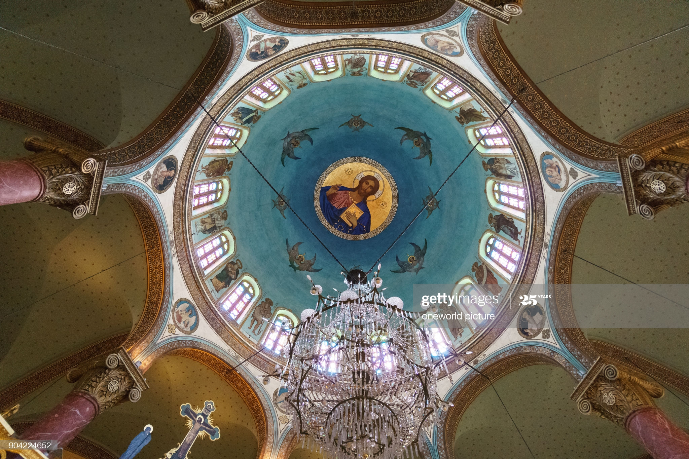

Famous Coptic Christian Sites
Egypt is identified in the Bible as the place of refuge that the Holy Family sought in its flight from Judea: "When he arose, he took the young Child and His mother by night and departed for Egypt, and was there until the death of Herod the Great, that it might be fulfilled which was spoken by the Lord through the prophet, saying, Out of Egypt I called My Son" (Matthew 2:12-23).
- Church Of St. George

The Church of St. George is a Greek Orthodox church within the Babylon Fortress in Coptic Cairo. It is part of the Holy Patriarchal Monastery of St George under the Greek Orthodox Patriarchate of Alexandria and all Africa. The church dates back to the 10th century (or earlier). The current structure was rebuilt following a 1904 fire, construction was finished in 1909. Since 2009, the monastery's hegumen has had the rank of bishop with title Bishop Babylonos ("Bishop of Babylon").
Location: Babylon Fortress, Coptic Cairo
- Saint Catherine's Monastery

The monastery was built by order of Emperor Justinian I (reigned 527–565), enclosing the Chapel of the Burning Bush ordered to be built by Empress Consort Helena, mother of Constantine the Great, at the site where Moses is supposed to have seen the burning bush. The living bush on the grounds is purportedly the one seen by Moses. Structurally the monastery's king post truss is the oldest known surviving roof truss in the world. The site is sacred to Christianity, Islam, and Judaism.
Location: Saint Catherine, South Sinai - The Hanging Church

The Hanging Church was built during the patriarchate of Isaac (690–692), It is called the Hanging Church because it was built on the southern of Babylon Fortress, the Roman fortress in Coptic Cairo (Old Cairo). Logs of palm trees and layers of stones were constructed above the ruins of the Roman fortress to be used as a fundament. The Hanging Church is a unique church and has a wooden roof in the shape of Noah's ark.
Location: Kom Ghorab, Old Cairo
- Monastery of Saint Pishoy

Pishoy founded this monastery in the fourth century. On December 13, 841 (4 koiak, 557 AM). The monastery has five churches, the main one being named after Pishoy. The other churches are named after Mary, Abaskhiron the Soldier, Saint George, and the archangel Michael. The monastery is surrounded by a keep, which was built in the fifth century to protect the monastery against the attacks by Berbers.
Al-Natrun Valley, El-Beheira - Saints Sergius and Bacchus Church (Abu Serga)

The Church was built in the 4th century and finished during the 5th century. It was burned during the fire of Fustat during the reign of Marwan II around 750. It was then restored during the 8th century, and has been rebuilt and restored constantly since medieval times; however, it is still considered to be a model of the early Coptic churches. The most interesting feature is the crypt where Mary, Joseph and the infant Jesus are said to have rested. The crypt is 10 meters deep and, when Nile levels are high, is often flooded.
Location: Babylon Fortress, Coptic Cairo